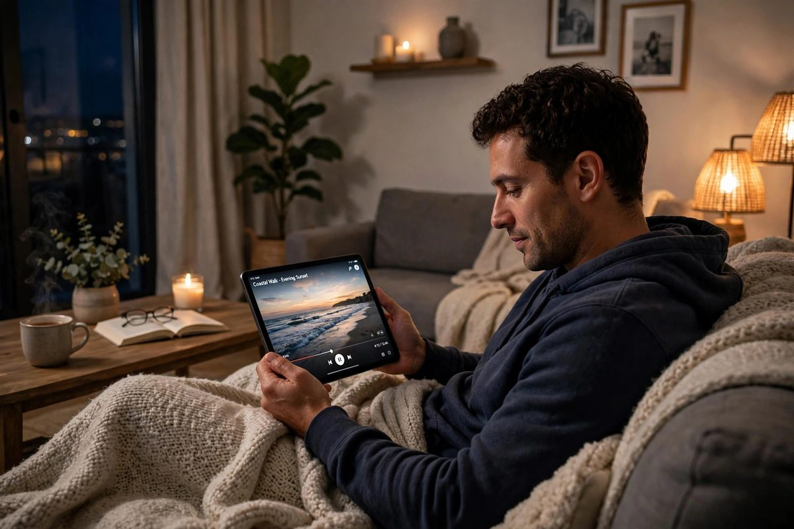

YouTube Watch Later vs Download: Which One Should You Use?
Compare saving videos with Watch Later and playlists against downloading them for offline viewing.
YouTube gives you two different ways to keep a video for later: Watch Later, which bookmarks it, and Download, which saves it to your device. They sound similar, but they solve different problems, and choosing the wrong one leads to frustration, such as opening Watch Later on a plane and finding nothing plays. This guide compares the two directly, so you can pick the right one for each situation.
What Watch Later does
Watch Later is a private playlist built into every YouTube account. Tap Save under a video, or the clock icon, and the video is added to the list. It costs no storage, works on every device where you are signed in, and is perfect for videos you want to watch in the next few days. The limitation is that it is only a bookmark: the video still streams from YouTube, so it needs a connection, and if the uploader deletes the video or makes it private, the entry becomes unplayable.
What Download does
Download saves the actual video file, or an encrypted copy of it, on your device, so it plays with no connection at all. It needs YouTube Premium, it uses storage, and downloads expire after 30 days without reconnecting. It is the right choice for flights, commutes through dead zones, and places with expensive mobile data. Unlike Watch Later, a downloaded video keeps working even if your connection disappears entirely.
When to use each
Use Watch Later when you are at home with good Wi-Fi and you simply want to remember a video for tonight or tomorrow. Use Download when you know you will be offline, such as a flight, a long train ride, or a rural trip. Many people use both: Watch Later as an inbox for interesting videos, and Download for the few they want to keep for a journey. A good habit is to clear Watch Later regularly, because a list of 500 unwatched videos is not a plan, it is a pile.
Playlists as a third option
Playlists sit between the two. A playlist organises videos by topic, such as a course or a workout series, and you can download a whole playlist with Premium. A playlist can also be shared, unlike Watch Later, which is always private. If you return to the same set of videos often, a playlist is better than Watch Later. If you only need a video once, Watch Later is faster. The three features work together, and using each one for what it is good at keeps your YouTube organised.
Clean up Watch Later weekly
Watch Later only works if you treat it as an inbox, not as storage. The habit is simple: once a week, open the list, watch or delete the oldest entries, and move anything worth keeping into a named playlist. A list with fewer than twenty videos is a plan you will actually follow; a list with five hundred is a pile you will never open. Be honest when you review it: if you have skipped a video three weeks in a row, you are not going to watch it, and deleting it is not a loss. The same discipline applies to downloads: delete watched videos promptly, so the Downloads list stays short and the storage stays free. A weekly five-minute cleanup keeps YouTube useful instead of overwhelming, and it means the videos you do keep are the ones that matter to you.
Frequently Asked Questions
What is Watch Later?
A built-in YouTube playlist where you save videos to watch soon. It needs an internet connection to play them.
Does Watch Later work offline?
No. It only bookmarks the video. Downloads are the offline option, and they need Premium.
Can I share a Watch Later list?
No, Watch Later is private. Create a public or unlisted playlist if you want to share a collection.